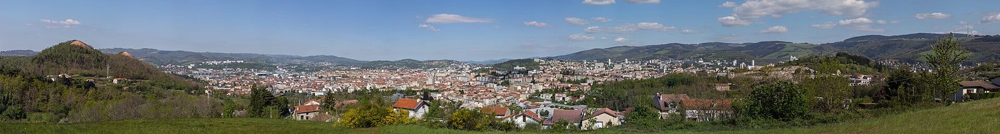

FAQ
Questions fréquentes
Des réponses simples pour comprendre comment présenter un bien, signaler une situation, proposer une ressource ou entrer en contact avec l’Agence.

Réponses utiles
Avant de déposer une demande
TVF est-elle une agence immobilière classique ?
TVF agit comme une Agence Territoriale de Revitalisation Immobilière portée par une association loi 1901. Elle accompagne l’étude, l’orientation et la remise en usage de biens vacants, sans se substituer aux professionnels réglementés lorsque leur intervention est nécessaire.
Qui peut présenter un bien ?
Un propriétaire, un représentant habilité, une collectivité ou un acteur disposant d’informations utiles peut transmettre une demande. La suite dépend des droits du propriétaire, du cadre juridique et des informations disponibles.
Un signalement prouve-t-il qu’un bien est abandonné ?
Non. Un signalement attire l’attention de TVF sur une situation. Il ne constitue pas une preuve juridique de vacance, d’abandon ou d’absence de propriétaire.
TVF réalise-t-elle les travaux ?
TVF peut orienter, organiser et mobiliser des partenaires. Les travaux nécessitant qualification, assurance ou autorisation sont réalisés par les professionnels compétents.
Les aides sont-elles garanties ?
Non. Les aides dépendent des critères d’éligibilité, du bien, du projet et des organismes compétents. TVF peut informer et orienter, sans promettre une attribution automatique.
Comment ma demande est-elle suivie ?
Elle est reçue, qualifiée, orientée puis, si nécessaire, transformée en dossier dans les outils internes de TVF.